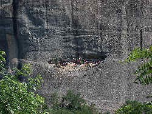
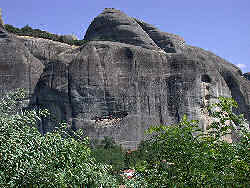

Σπηλαιο αη Γιωργη Μανδηλα
Agios Georgios Mandelas's Cave
Useful Information
| Location: | Near Kalambaka |
| Open: |
No restrictions. [2010] |
| Fee: |
free. [2010] |
| Classification: |
 Erosional cave Erosional cave
|
| Light: | bring torch |
| Dimension: | |
| Guided tours: | |
| Photography: | |
| Accessibility: | |
| Bibliography: | |
| Address: | |
| As far as we know this information was accurate when it was published (see years in brackets), but may have changed since then. Please check rates and details directly with the companies in question if you need more recent info. |
|
History
Description
|  |
| Image: Agios Georgios Mandelas's Cave. |
{kind=link}
A really special cave is Agios Georgios Mandelas's cave. This is a horizontal hole or ledge in the middle of an almost undisturbed, sleek cliff face. It is located at the middle road to the monasteries, right at the city limits of Kalambaka, much lower than the famous monasteries. It looks rather small from the road, but some colourful flags can be seen from far. With binoculars it is possible to see that the cave is rather huge, huge enough to erect several buildings inside.
|  |
| Image: Agios Georgios Mandelas's cave. |
{kind=link}
This is the chapel of Agios Georgios Mandelas (Saint George with the Handkerchiefs). He lived in the 17th century, during the Turkish occupation of Greece. A legend tells, that a local Muslim landowner cut some trees from the saint's sacred forest. In revenge Saint George paralysed the man's hand. He offered the saint his wife's yashmak (veil), the most valuable gift a Muslim can give. The saint was pacified and cured the man.
In memory of that donation, worshippers hang huge pieces of cloth once a year on a line supported by trees beside the cave's entrance. Young men from Kalambaka compete in a climb up to the cave, using ropes. They carry down parts of the cloth, which they keep in their homes as talismans of good health. Hanging multicoloured rags and ribbons from the branches of sacred trees is an ancient health-seeking ritual, both in Greece and Cyprus. It seems this kind of rituals has survived until today in modern hospitals.
- See also
 Search Google for "Agios Georgios Mandelas's Cave"
Search Google for "Agios Georgios Mandelas's Cave" Google Earth Placemark
Google Earth Placemark Agios Georgios Mandelas in the distance | Flickr - Photo Sharing!
(visited: 31-OCT-2010)
Agios Georgios Mandelas in the distance | Flickr - Photo Sharing!
(visited: 31-OCT-2010)- Welcome to HUMANE Health Care...
(visited: 31-OCT-2010)
- Meteora Things To Do - Attractions & Must See - VirtualTourist
(visited: 31-OCT-2010)